Main Variables: Descriptive Statistics

Main Varibles Descriptions
- Reading: reading duration in minutes
- Meditation: meditation duration in minutes
- Phone_pickups: number of times I picked up my phone
- Screen_time: duration of spent time on my phone in minutes
- Rise_time: the variation in minutes from the intended rise time
- 0: Woke up on time
- -n: Woke up n minutes earlier than intended
- +n: Woke up n minutes later than intended
Drink: Whether or not I drank the day before (Boolean)
Work_finished: Finished_tasks / Total_tasks
Multiple: Subjective grade given each day
- Considered factors: Mentality, Satisfaction, Productivity, Social interaction, and Tech consumption
Total: The sum of the percentages calculated of above variables
Main Variables Correlations
To find the relationships between these variables and how they affect my lifestyle, we will first observe the relationships within variables
- Use pairs.panels function in psych module
- The diagonal histograms demonstrates the distribution of each variable
- The bottom left triangle represents a scatter plot with the best fit line
- The top right triangle represents a correlation coefficient for each pair, which ranges from -1 to 1
- If the coefficient is close to 1, it means that the pair holds a positive relationship and a negative relationship for -1.
- Correlation Coefficient Formula:
\[r = \dfrac{\sum(x_i-\bar{x})(y_i-\bar{y})}{\sqrt{\sum(x_i-\bar{x})^2\sum(y_i-\bar{y})^2}}\]
correlation_plot <- all_dat %>%
dplyr::select(c(Screen_time, Meditation, Multiple, Rise_time,
Reading,Phone_pickups, work_finished, Total))
pairs.panels(correlation_plot, lm = TRUE)
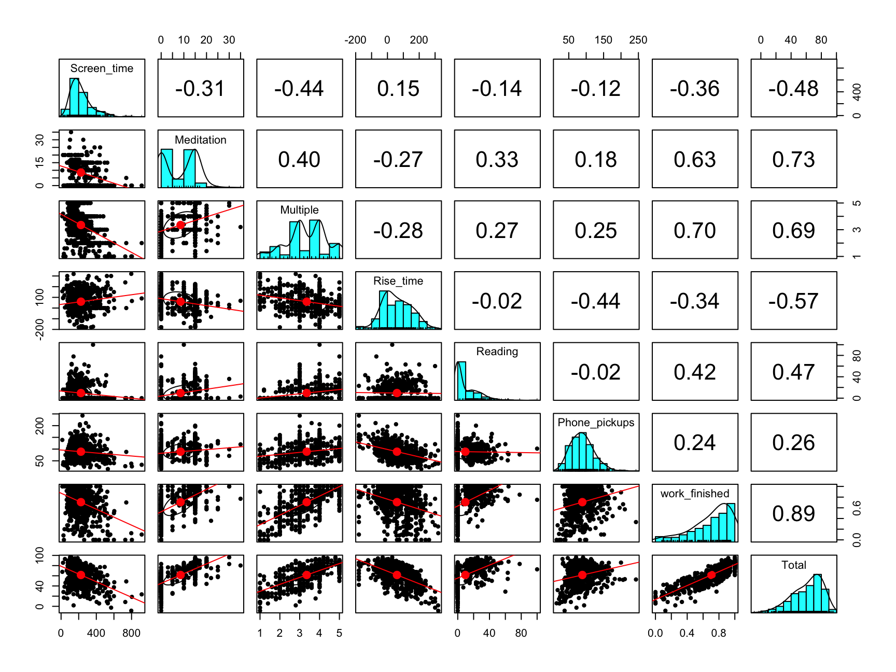
School Variable
ggplot(data = all_dat, aes(x = work_finished,
color = School))+
geom_density()+
labs(title = "Density Plot of Work Finished% for different School periods",
x = "Work Finished (%)")+
theme(plot.title = element_text(face = "bold")) +
scale_color_discrete(name = "School Qtrs")
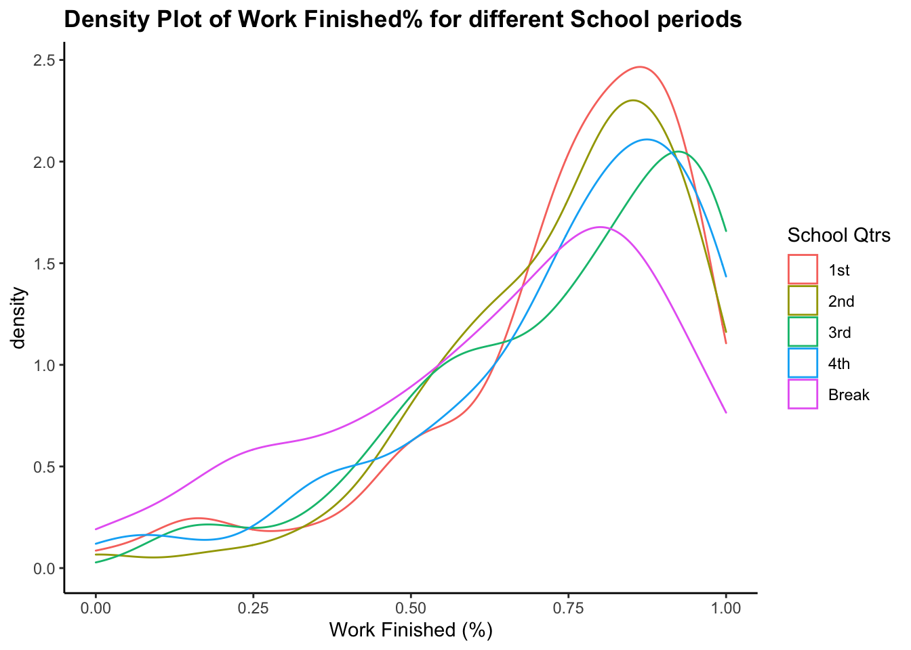
Weekday Variable
all_dat$Weekdays <- factor(all_dat$Weekdays,levels = c("Monday", "Tuesday", "Wednesday", "Thursday","Friday","Saturday","Sunday"))
ggplot(data = all_dat)+
geom_boxplot(aes(x = Weekdays,
y = work_finished, color = Weekdays))+
theme(legend.position = "None")+
labs(title = "Work finished % by week days",
subtitle = "Data: all_dat (500+ observations)",
x = "", y = "Work Finished (%)")+
theme(plot.title = element_text(face = "bold"))
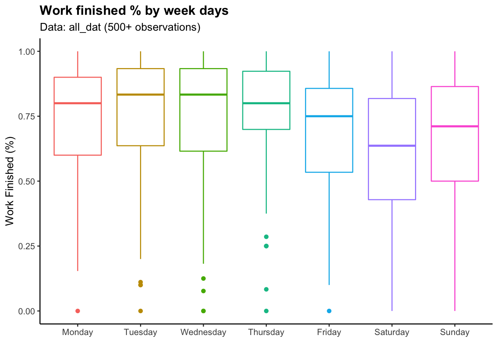
Time Trend (Total %)
all_dat_month <- all_dat %>%
dplyr::filter(!is.na(Rise_time)) %>%
dplyr::group_by(year, month) %>%
dplyr::summarise(Total = mean(Total),
Rise_time = mean(Rise_time)) %>%
dplyr::mutate(Date = make_date(year, month)) %>%
arrange(Date)
ggplot(all_dat_month)+
geom_line(aes(x=Date, y=Total))+
labs(title = "Trend of Total%",
subtitle = "Grouped by Month Average")+
theme(plot.title = element_text(face = "bold")) +
scale_x_continuous(breaks = ymd("2020-09-01", "2021-01-01","2021-04-01", "2021-07-01", "2021-10-01","2022-01-01", "2022-04-01"),
labels=c("09/20", "01/21", "04/21", "07/21",
"10/21", "01/22","04/22"))
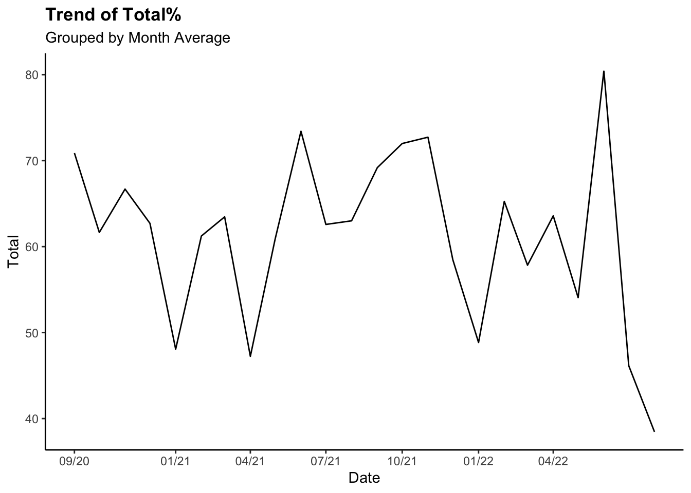
Time Trend (Total % - Rise time)
ggplot(all_dat_month)+
geom_line(aes(x=Date, y=Total-Rise_time))+
labs(title = "Trend of Total% - Rise time",
subtitle = "Larger positive differnce indicates higher productivity")+
theme(plot.title = element_text(face = "bold")) +
scale_x_continuous(breaks = ymd("2020-09-01", "2021-01-01", "2021-06-01",
"2022-01-01"))
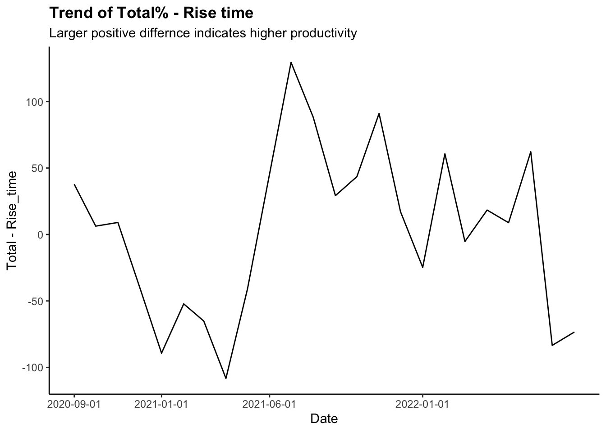
- Note for Rise time:
- 0: Woke up on intended time
- Positive value: Later than intended
- Negative value: Earlier than intended
Morning Routine Varables: Descriptive Statistics
\["The\ notion\ that\ once\ you\ set\ accomplishment\ in\ motion,\\ you\ can\ keep\ it\ in\ motion\ with\ much\ less\ effort\ than\\ if\ you\ were\ trying\ to\ accomplish\ something\ from\ a\ standing\ start."\\ -Jim\ Kwik\]
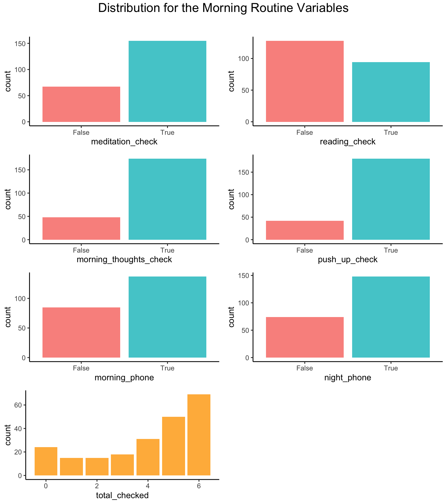
Morning Routine Descriptions
Note that they are all discrete/ categorical variables
- Total_checked: The number of morning routine tasks completed
- Meditation_check: Meditation task completion (Boolean value)
- Reading_check: Reading task completion (Boolean value)
- morning_thoughts_check: Morning journal task completion (Boolean value)
- Push_up_check: Push up task completion (Boolean value)
- Morning_phone: Did not touch my phone for the first hour of the day (Boolean value)
- Night_phone: Did not touch my phone for the last hour of the day (Boolean value)
Test how Total_checked variable affects the outcome of the day
- The morning routine tasks:
- Not touching my phone for at least 30 minutes the night before
- Not touching my phone for an hour after I wake up
- Exercise (Push up)
- Meditation
- Reading
- Morning journal
# see how number of morning routine checks affects the Total %
ggplot(dplyr::filter(all_morning_rt, total_checked != 0)) +
geom_density(aes(Total))+
facet_wrap(~total_checked)+
labs(title = "Morning Routine checked & \nTotal %")+
theme_classic()
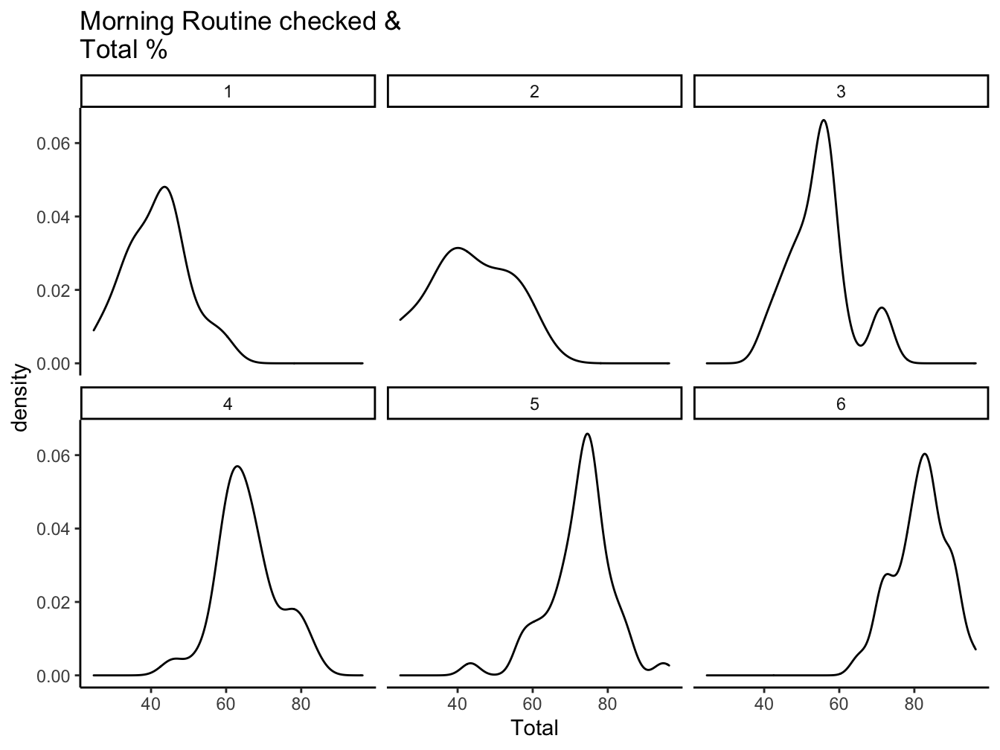
# see how number of morning routine checks affects the total todo lists checked
ggplot(dplyr::filter(all_morning_rt, total_checked != 0)) +
geom_density(aes(work_finished_mr_exc))+
facet_wrap(~total_checked)+
labs(title = "Morning Routine checked & \n todo lists finished(excluding morning routine tasks)")+
theme_classic()
Main Variables: Linear Regressions
Simple Linear Regression
- Set:
- x = Explanatory Variable
- y = Dependent Variable
- \(\alpha\) = y-intercept
- \(\beta\) = slope
lm() function:Fitting Linear Models
- Finds fitted line(\(\alpha\) & \(\beta\)) by using the least-square method
- Least-square: by summing up the residual squares for different curves, it finds the “least squared” curve that best fit the data.
- Outputs \(R^2\), p-value and other meaningful calculations
- \(R^2\): It demonstrates how accurate the fitted line is to the data
- Formula: \(R^2 =1-\dfrac{Var(fit)}{Var(mean)}\) or \(1-\dfrac{RSS}{TSS}\)
- Ex: If we get.8, it means that \(x\) explains 60% of the variation in \(y\)
model <- lm(work_finished ~ Meditation, data = all_dat)
pretty_lm <- prettify(summary(model))
rmarkdown::paged_table(pretty_lm)
ggplot(all_dat,aes(x=Meditation, y=work_finished))+
geom_smooth(method = "lm")+
geom_point()+
labs(title = "Linear Regression",
subtitle = "y = Total to-do lists finished (%) \nx = Meditation in minutes",
y = "Total to-do lists finished (%)", x = "Meditation in minutes")+
theme(plot.title = element_text(face = "bold"))+
theme_classic()
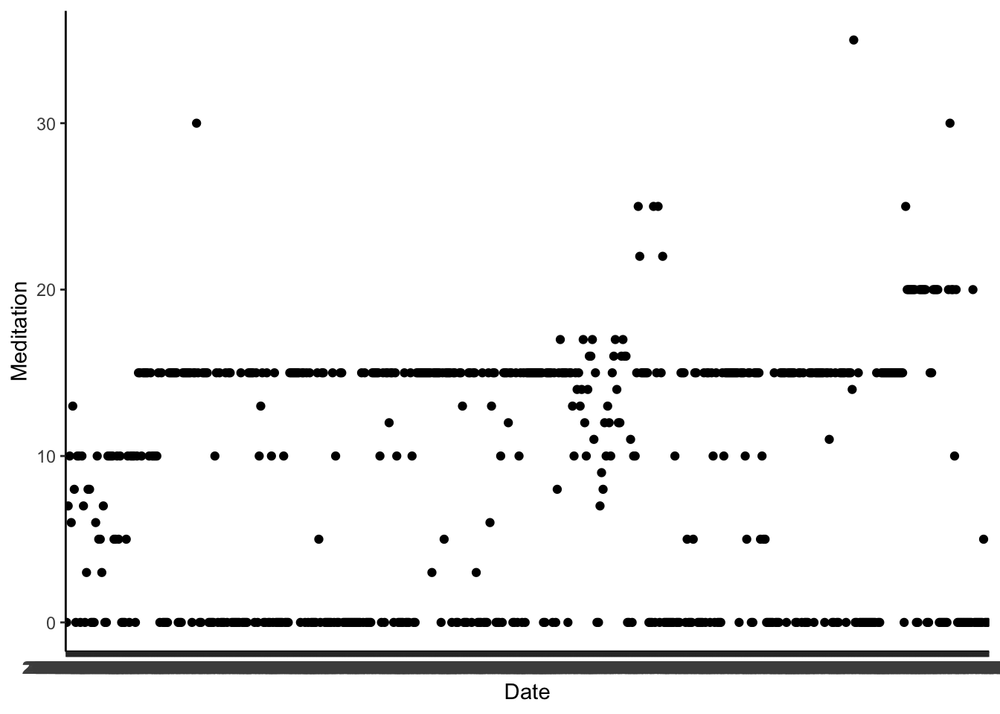
model <- lm(work_finished ~ Screen_time, data = all_dat)
pretty_lm <- prettify(summary(model))
rmarkdown::paged_table(pretty_lm)
ggplot(all_dat,aes(x=Screen_time, y=work_finished))+
geom_smooth(method = "lm")+
geom_point()+
labs(title = "Linear Regression",
subtitle = "y = The number of Phone pickups\nx = Rise time",
y = "Number of Phone pickups\n", x = "\nRise time")+
theme(plot.title = element_text(face = "bold"))+
theme_classic()
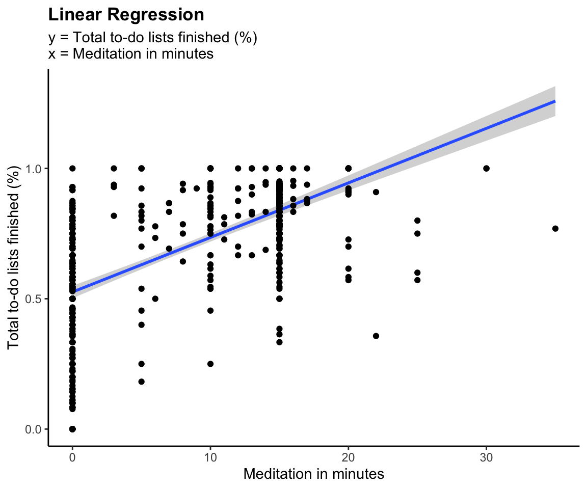
Multiple regressions
- Set:
- y = Dependent Variable
- \(x_1,...x_n\) = n independent/explanatory variables
- \(\alpha\) = Constant or intercept
- \(\beta\) = weights for each \(x_1,...x_n\)
model <- lm(work_finished ~ Screen_time + Meditation + Rise_time + Phone_pickups +
Reading + Drink + Total_todo + Multiple, data = all_dat)
pretty_lm <- prettify(summary(model))
rmarkdown::paged_table(pretty_lm)
Actual vs Prediction Visualization for Work_done (all_dat)
all_dat$pred_work_finished <- predict(model, newdata = all_dat)
# Explanatory variable: work_finished
ggplot(data = all_dat, aes(x = pred_work_finished, y = work_finished)) +
geom_point(alpha = 0.5, color = "darkgray") +
geom_smooth(color = "darkblue") +
geom_line(aes(x = work_finished,
y = work_finished), # Plotting the line, y = x
color = "red", linetype = 2) +
coord_cartesian( xlim = c(0, 1),
ylim = c(0, 1) ) + # Limits the range of the
labs(title = "Multiple Regression",
subtitle = "Actual Tasks Finished (%) vs Predicted Values of Task Finished (%)",
y = "Tasks Finshed (y)", x = expression(hat(y)))+
theme(plot.title = element_text(face = "bold"))+
theme_classic()
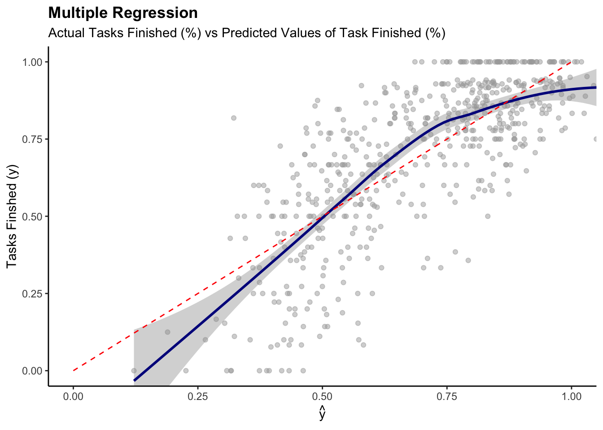
- Systematic Error can be observed
- NOT a perfect prediction model, but the the model is reasonable
Main Variables: Time Series
ats <- ts(all_dat, start = decimal_date(mdy("09/01/2020")),
frequency = 365.25 / 7)
ggplot(data = all_dat) +
geom_line(aes(x = mdy(Date), y = Total))+
scale_x_continuous(breaks = ymd("2020-09-01", "2021-01-01","2021-04-01", "2021-07-01", "2021-10-01","2022-01-01", "2022-04-01"),
labels=c("09/20", "01/21", "04/21", "07/21",
"10/21", "01/22","04/22"))+
labs(title = "Time Seires", subtitle = "Total (%)")
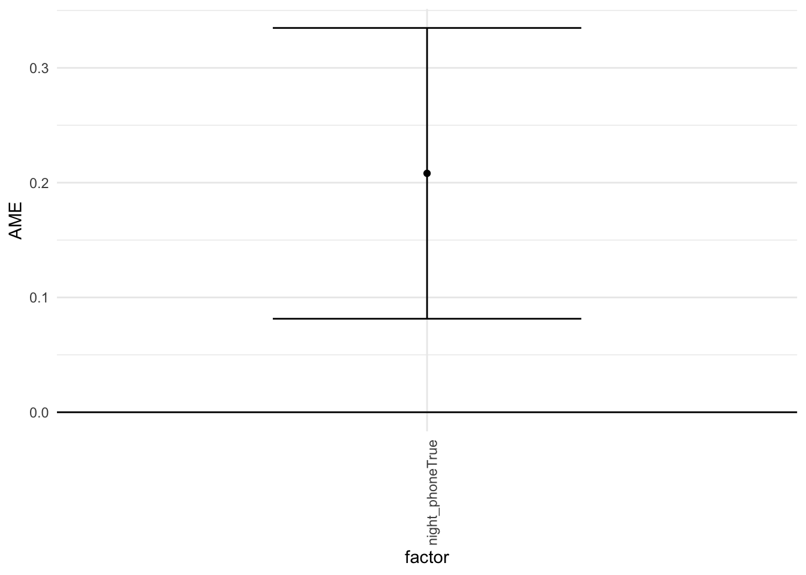
myts <- ts(all_dat$Total, start=c(2020, 9,1), end=c(2022, 3, 31), frequency=365)
fit = ets(myts)
plot(fit)
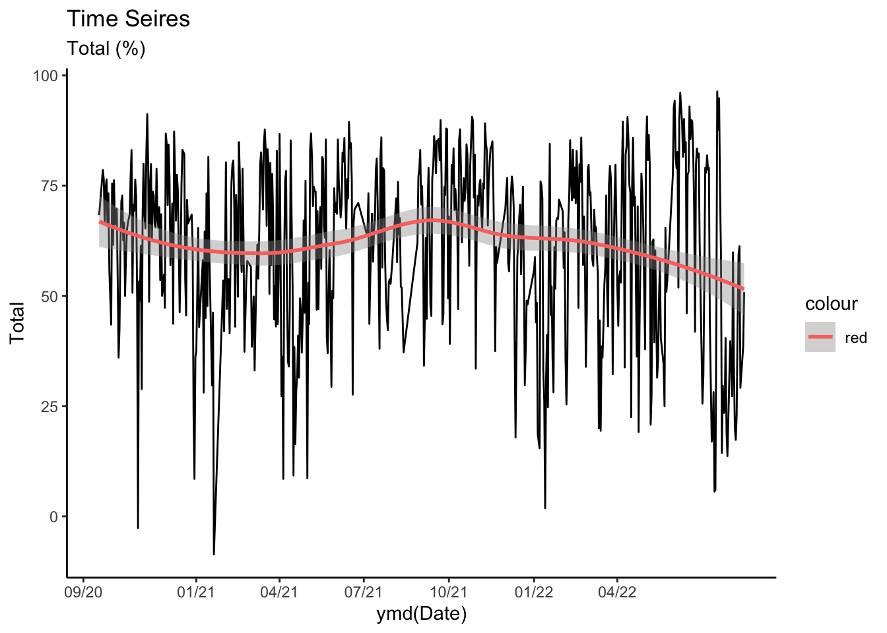
box_dat <- all_dat %>%
group_by(month) %>%
dplyr::mutate(my = make_date(year, month)) %>%
group_by(my) %>%
dplyr::mutate(busy_scale = mean(Total_todo))
# Total months
tot_month = length(unique(box_dat$my))
dates = seq(as.Date('09/01/2020', format = "%m/%d/%Y"),
by = "month", length.out = tot_month)
dates_lb = format(seq(as.Date('09/01/2020', format = "%m/%d/%Y"),
by = "month", length.out = tot_month), "%m\n%y")
ggplot(box_dat) +
geom_boxplot(aes(x = mdy(Date), y = Total,
fill = busy_scale, group = my))+
labs(title = "Time Seires", subtitle = "Total (%) & Busyness", x = "Dates") +
theme(plot.title = element_text(face = "bold")) +
scale_x_date(breaks = dates, labels = dates_lb)+
scale_fill_gradient(low = "white", high = "#C03B3B")+
theme_classic()
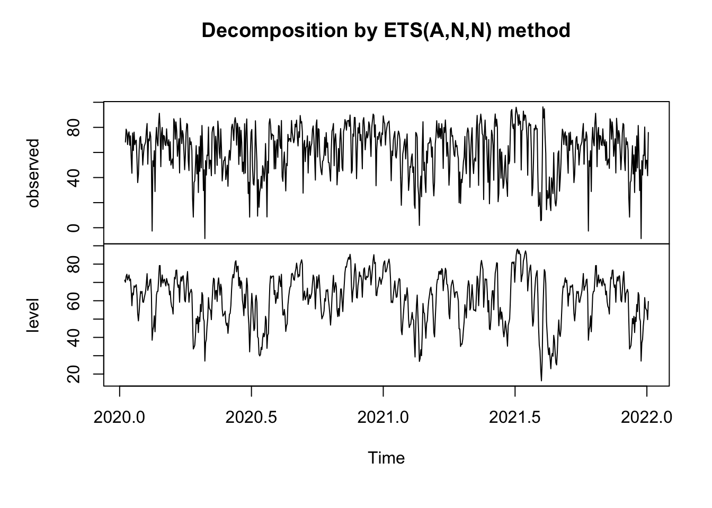